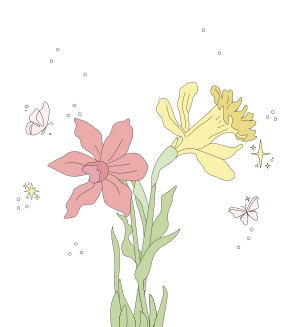
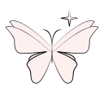
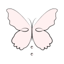
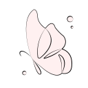

무디어리. 당신의 꽃 감정 다이어리
오늘 감정을 한 줄로 기록해보세요. 그 감정을 꽃과 연결해줍니다.
기록·다이어리를 하나의 흐름으로 연결해, 당신의 꽃 감정 다이어리를 만들어보세요.



한 줄 감정을 적으면, 감정에 어울리는 꽃이 매칭되어 오늘의 꽃 카드가 만들어집니다.
오늘의 기록이 달력과 카드로 저장됩니다. 날짜를 눌러 다이어리를 확인하거나 정원을 다시 꾸밀 수 있어요. diary →